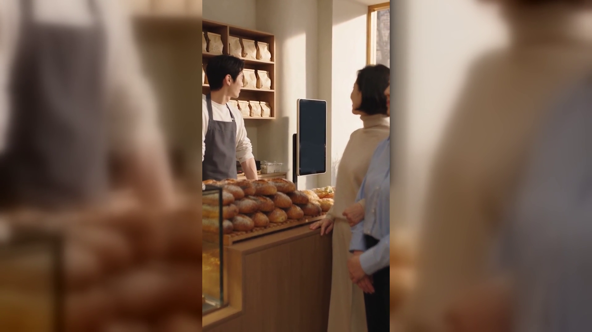
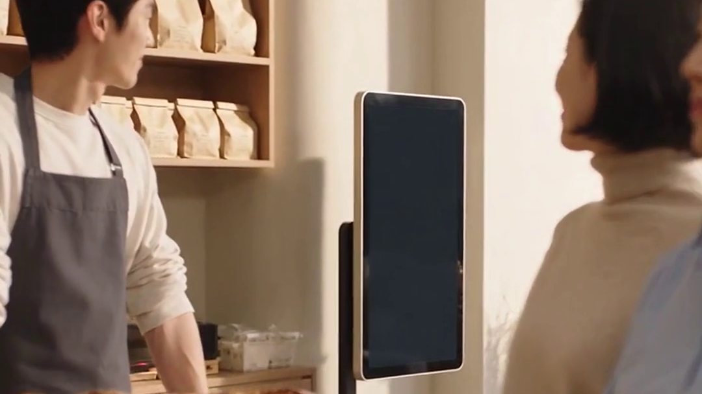
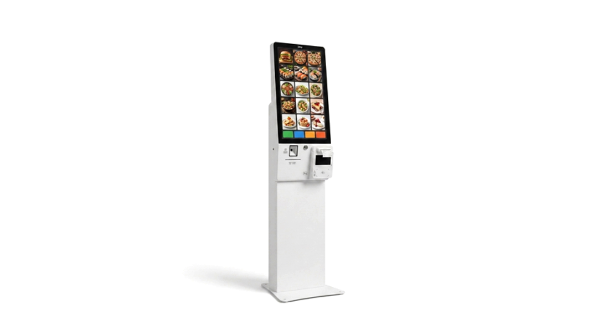

[제목]
토스키오스크, 카운터에 단말기와 같이 둘 때 갈리는 기준 여섯 — 키오스크 렌탈
[본문]
손님은 늘었는데 카운터는 여전히 한 사람입니다. 키오스크를 하나 들일까 싶다가도, 그러면 지금 쓰던 단말기는 어떻게 되나 싶어 멈추게 됩니다. 오늘은 둘을 같이 둘 때 무엇이 갈리는지 정리했습니다.

결론부터 말씀드리면, 키오스크와 단말기는 서로 대체하는 관계가 아니라 손님을 두 줄로 나누는 관계입니다.
- 줄이 서는 시간대부터 세어 봅니다
하루 중 줄이 실제로 서는 시간이 한 시간을 넘지 않으면 기계보다 동선 조정이 먼저입니다. 두 시간을 넘어가기 시작하면 그때부터 계산이 달라집니다.
- 주문 종류가 몇 가지인지 봅니다
고르는 데 시간이 걸리는 매장일수록 키오스크가 유리합니다. 반대로 대부분 같은 것만 나가는 매장은 카운터에서 한 번에 받는 편이 더 빠릅니다.
- 현금과 상품권 비중을 확인합니다
현금 손님이 꾸준한 매장은 키오스크만으로 하루를 닫지 못합니다. 카운터 단말기를 반드시 남겨 두어야 마감이 흔들리지 않습니다.
- 놓을 자리 폭을 먼저 재 봅니다
키오스크는 기계 폭보다 앞에 설 사람 자리가 더 듭니다. 한 사람이 편히 서서 조작할 여유가 나오는지 줄자로 재 보시는 편이 확실합니다.
- 손님 나이대가 갈리는 매장인지 봅니다
기계 앞에서 오래 머무는 손님이 많으면 줄이 오히려 길어집니다. 그런 매장일수록 카운터 응대를 함께 남겨 두는 편이 안전합니다.
- 두 대의 매출을 한 곳에서 볼 수 있는지 확인합니다
따로 집계되면 마감할 때마다 두 번 맞춰야 합니다. 도입을 정하기 전에 이것부터 물어보시면 나중에 손이 크게 줄어듭니다.

위 3번과 6번을 같이 풀려면 카운터 단말기를 남긴 채로 키오스크를 붙이는 구성이 편합니다. 토스단말기와 키오스크를 함께 두면 현금·응대가 필요한 손님은 카운터로, 나머지는 키오스크로 자연스럽게 나뉩니다. 정품 신제품 보증 · 수도권 직영 설치를 원칙으로, 매장 폭을 보고 자리를 함께 잡아 드립니다.
키오스크는 카운터를 없애는 기계가 아니라, 카운터가 상대할 손님을 줄이는 기계입니다. 줄이 서는 시간부터 세어 보세요.
- 📞 전화상담 1544-7754
- 🌐 홈페이지 https://nwpos.co.kr

📷 인스타그램 팔로우 https://www.instagram.com/nurinetworkspos

▶️ 유튜브 구독 https://www.youtube.com/@nurinetworks
(2026년 9월 기준)
15초 3채널 공용 = 베이커리 키오스크와 카운터 단말기 동시 운용
① 상황 — 입구 키오스크와 안쪽 카운터, 손님이 두 갈래로 갈리는 와이드
② 행동 — 한쪽은 키오스크에서 주문, 같은 시각 카운터에서는 다른 손님이 카드 결제
③ 제품 — 카운터 위 흰색 단말기 클로즈업, 뒤로 키오스크 (첫 2초 = 3채널 썸네일)
[대표이미지]
- 이미지1-매장: 베이커리 입구 키오스크와 안쪽 카운터가 한 화면에 들어온 와이드컷
- 이미지2-제품: 카운터 위 흰색 카드단말기와 뒤편 키오스크 (화면 완전 공백)